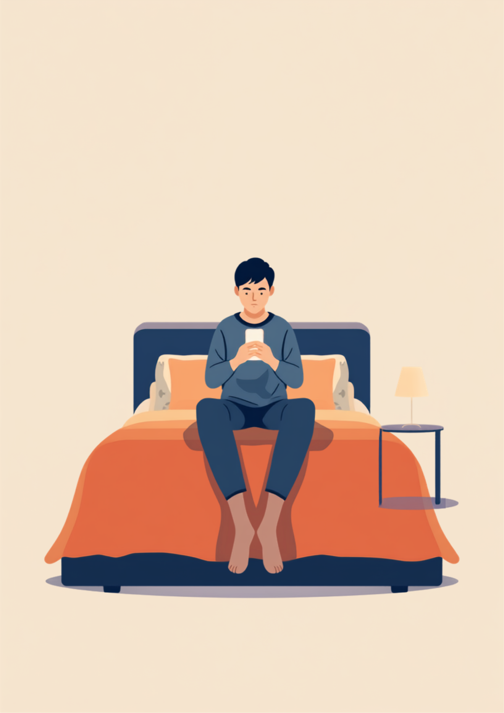
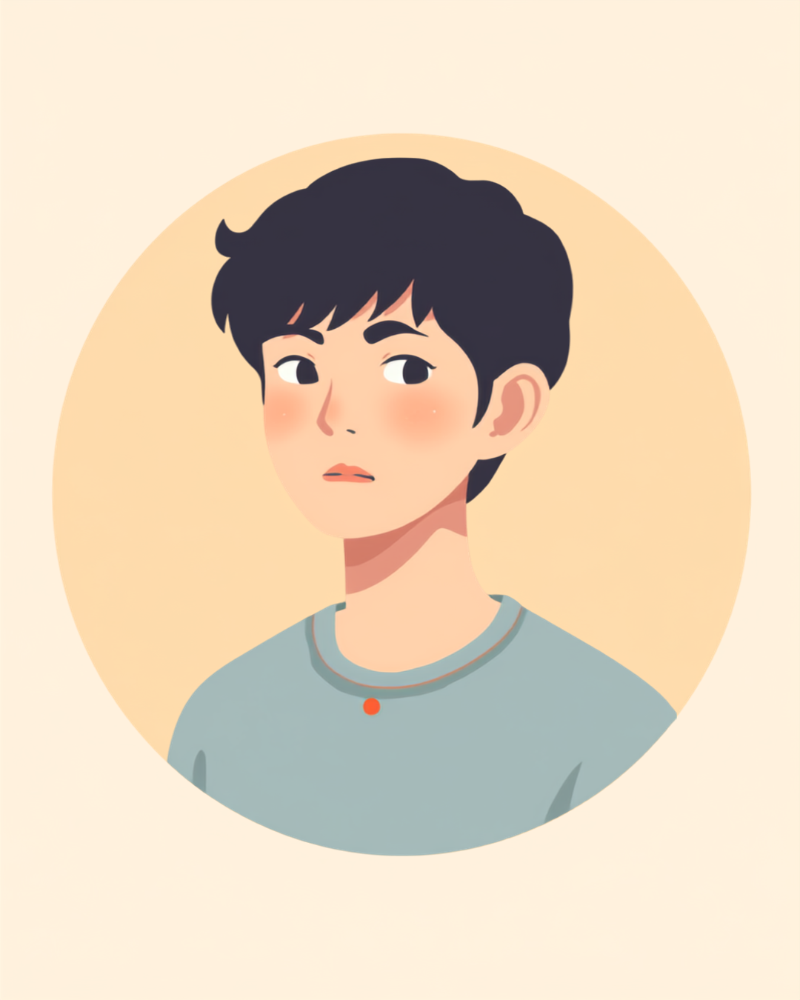

布団の中でスマホを開くと、友達からのLINEに既読がついている。既読をつけたのは自分なのに、そこから先の言葉が出てこない。「元気にしてる?」の一文に指が止まったまま、気づけば日付が変わっている。この記事では、休職していることを友達に言えないまま、そうした時間を抱えている人の気まずさについて、就労支援の現場で聞いてきた声をもとに整理しました。
PR



既読をつけたのは自分なのに、そこから先の言葉が出てこない
既読をつけたまま、指が止まる

休職中は、仕事関係の連絡だけでなく、プライベートの友人関係まで急に負担に感じられるようになることがあります。これは珍しいことではなく、就労支援の現場でもよく聞く話です。まめざる
就労支援の現場で関わってきた中で、休職していることを友達に言えないという悩みを何度も聞いてきました。多くの場合、友達に嫌われたくないとか、縁を切りたいということではありません。ただ、LINEを開いて既読をつけた瞬間に「なんて返せばいいんだろう」という思考が一気に押し寄せて、指が止まってしまう。それだけのことのようです。
「元気にしてる?」の一文に返そうとすると、頭の中で何通りもの返信を作っては消す作業が始まります。正直に話すべきか、当たり障りのない一言でごまかすべきか、そもそも今の自分の状態を一言で言い表せる言葉が見つからないか。考えているうちに時間だけが過ぎ、既読だけがついた画面が、次に開いたときも同じ場所に残っています。
!
ここで紹介している場面は、複数の方から伺った経験を組み合わせて再構成したものです。休職の理由や友人関係の距離感には個人差があるため、この記事の内容がそのまま当てはまるとは限りません。
「大学からの友達グループのLINEがあるんですけど、休職して1ヶ月くらい経った頃、既読だけつけて3日くらい返せなかったことがあって。既読無視してるみたいで自己嫌悪がすごかったです。別に無視したいわけじゃなくて、ただ『元気？』に対して嘘つきたくないし、かといって本当のことも言いたくないしで、めちゃくちゃ悩んでるうちに時間が過ぎてただけなんですけど。結局『最近バタバタしてて、また落ち着いたら連絡する』って一言だけ送りました。」
20代・女性（適応障害・事務職）
「元気そうだね」が一番こわい
休職していることを友達に言いにくい理由のひとつに、「元気そうだね」と言われることへの怖さがあります。久しぶりに顔を合わせたときや、たまたま外で元気そうに振る舞えたときに、その言葉をかけられると、「本当はしんどいのに、そう見えていないんだ」という違和感が残ってしまうという声を聞きます。かといって「実はしんどい」と説明し直すのも、なんだか重たい空気になりそうで言い出せない。結局、笑って流すしかなくなることが多いようです。
通知が来た瞬間に緊張が高まり、日付が変わっても完全には落ち着かないことがある
i
「元気そうだね」は、多くの場合ただの気遣いの言葉です。悪意があって言われているわけではないと分かっていても、しんどさが見えないこと自体がつらいと感じる方は少なくないようです。
「営業やってて、休職する少し前から会社の人にも『全然そう見えない』ってよく言われてたんですけど、休職してから偶然駅で大学の友達に会ったときも『元気そうじゃん』って言われて。いや元気じゃないから休んでるんだけどな、と思いつつ、その場で説明する気力もなくて『ぼちぼちだよ』って流しました。正直、あの一言だけで一日気分が沈んだのを覚えてます。」
30代・男性（うつ病・営業職）
誘いを断る理由を考えるだけで疲れる
「今度ご飯行こうよ」という何気ない誘いにも、休職中は別の重さが乗ってきます。行きたくないわけではないのに、外に出る体力が読めない、会えば近況を聞かれるかもしれない、断れば変に思われるかもしれない。そうした計算を毎回頭の中でしてから返信するのは、地味に体力を使う作業のようです。
相談の一コマ

相談者
友達から「久しぶりに集まろう」って誘われたんですけど、断る理由を考えるだけでどっと疲れてしまって。行けない理由を毎回変えるのも不自然だし、かといって本当のことも言いたくないし。
まめざる
毎回違う理由を用意しようとすると、それだけで疲れてしまいますよね。自分の中で一つだけ、使い回せる言い方を決めておくというやり方もありますよ。
相談者
使い回すのって、なんだか失礼な気もしてしまうんですけど…。
まめざる
理由の中身より、毎回考える負担を減らすことの方が今は大事かもしれません。「今ちょっと体調を整えてる時期で、また落ち着いたら誘って」くらいの一言を決めておくと、とっさのときも慌てずに済むという声をよく聞きます。
使い回してよい、一言の例
- 「今ちょっと体調を整えてる時期で、また落ち着いたら誘って」
- 「今は予定を詰め込まないようにしてて、行けたらこっちから連絡するね」
- 「ありがとう、今回はパスするけど誘ってくれて嬉しかった」
理由の正確さより、自分が繰り返し使っても疲れない言葉かどうかを優先して選んでよいようです。同じ言い方を何度使っても、相手はそこまで気にしていないことがほとんどだといいます。
一人にだけ話すという選択肢
「言う」か「言わない」かの二択で考えると、どちらを選んでも何かを諦めた気持ちになりやすいかもしれません。ですが、実際にはその間に、もう一つの選び方があります。信頼できる一人にだけ話しておくというやり方です。
i
全員に説明する必要はありません。友達グループの中の一人にだけ事情を伝えておき、その人が間に入ってくれることで、他のメンバーとは今まで通りの距離感を保てたという声もあります。
言うか言わないかを白黒つけようとしなくて大丈夫です。今週はこの人にだけ話す、来週はまだ黙っておく、というふうに、そのときどきで変えても問題ありません。まめざる
もちろん、一人にだけ話すことが誰にとっても正解というわけではありません。話したことで安心できる相手もいれば、話さずに距離を置くことで気持ちが落ち着く相手もいます。大事なのは、相手ごとに違う対応をしてもよいという前提を自分の中に持っておくことのようです。
友人関係の距離感や、休職の理由をどこまで話せるかには個人差があります。この記事の内容がそのまま当てはまるとは限らないため、無理に今の対応を変える必要はありません。
既読をつけたまま返信できずにいるのは、サボっているわけでも、友達を軽んじているわけでもありません。何と言えばいいか分からないだけの時間があっても、それを自分で責める必要はないはずです。
よくある質問
Q. 休職していることは友達に言うべきですか？言わないべきですか？
どちらが正解ということはないとされています。言って楽になったという声もあれば、言わないまま距離を置くことで気持ちが落ち着いたという声もあります。全員に同じ対応をしようとせず、相手ごとに考えてよいものだと思います。
Q. LINEの既読がついたまま返信できないのはおかしいことですか？
おかしいことではないとされています。何と書けばいいか分からない、心配されたくない、詮索されたくないなど、返信を止める理由はいくつも重なっていることが多いようです。焦って無理に返す必要はありません。
Q. 友達からの誘いを断るとき、何と言えばいいですか？
理由を細かく説明する必要はないとされています。「今ちょっと体調を整えてる時期で」「また落ち着いたら誘って」くらいの一言で十分というケースも多いようです。毎回違う理由を考えるより、自分の中で一つの言い方を決めておくと気持ちが楽になる場合があります。
Q. 友達の中の一人にだけ話す、というやり方はありですか？
一つの選択肢としてよく聞かれる方法です。全員に公表するか、誰にも話さないかの二択ではなく、信頼できる一人にだけ事情を伝えておくことで、他の人との関係は今まで通りの距離感を保てたという声があります。
Q. 休職中、SNSに近況を投稿しない方がいいですか？
投稿するかどうかに決まりはありません。ただ、元気そうに見える投稿が誰かの目に留まり誤解につながることを心配して、休職中だけ更新を控えているという方もいます。無理に今まで通りにする必要はないという考え方もあります。
言えていない気持ちと、実際に送った一言の間には、いつも少し差がある
PR


一人で抱え込む前に、今の気持ちを話してみませんか
「まだ迷っている」段階でも大丈夫です。mimemimeの無料相談は、今の状況の整理から一緒に始められます。
無料で話してみる
この記事に、聞いてみたいことはありますか？
「自分の場合はどうなんだろう」と思ったことを、気軽に書いてみてください。いただいた質問は個別にお返事したうえで、匿名で記事にすることがあります。
おのざる
mimemime代表。就労支援の現場経験をもとに、障がいのある方の働く不安に寄り添う記事を執筆。